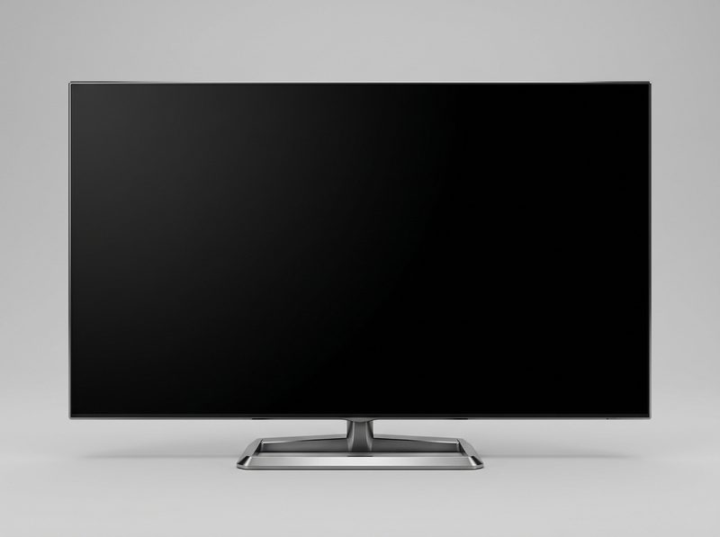

Startseite › Fernseher › Modell C

Modell C
65 Zoll · QLED · 4K Ultra HD, 120 Hz
1.099 €
inkl. MwSt., zzgl. Versand
● Auf Lager · Lieferung in 2–3 Werktagen
Der große Fernseher für Filmabende und Sport. Helles QLED-Panel mit 120 Hz, Gaming-Modus und HDMI-2.1-Anschlüssen. Mit Smart-Funktionen und Sprachsteuerung.
| Bilddiagonale | 65 Zoll (164 cm) |
| Panel | QLED, 4K Ultra HD, 120 Hz |
| Anschlüsse | 4 × HDMI 2.1, 3 × USB |
| Energieklasse | F |